Github Pages 部署
如果对 Github Pages 还不是很了解的话，可以先参考 [Hexo] 2 开始搭建 Github Pages。很多同学都不会满足于让其他人用 username.github.io 这样奇奇怪怪的域名来访问自己的个人博客。
购买个性域名
这里推荐 阿里云，毕竟国内大公司，另外还有很多人推荐的 GoDaddy 也可以，这里再推荐一个 NameSilo。本篇以阿里云为例。
- 首先注册阿里云账号，如果有淘宝账号的，可以直接登录。
- 登录以后，先进行实名认证（购买域名要用到）。
- 认证信息提交完毕后，可能需要一两天的审核时间。
- 认证完毕后回到首页，上方导航栏，产品分类 -> 企业应用 -> 域名注册，搜索自己想要的域名并进行购买（域名持有者选择个人，这里就用到之前的认证）。
- 购买完毕后，回到首页点击右上方的控制台，进入后点击上方导航栏的产品与服务，然后选择域名，点击进入域名解析列表，然后就可以看到刚刚买的域名了，接下来进行解析配置（绑定）。
绑定域名
-
进入域名解析列表并对购买的域名进行解析。
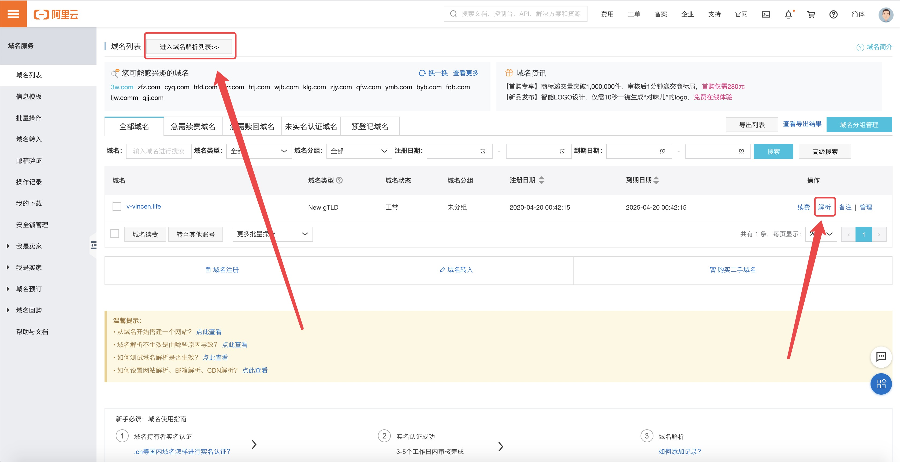
-
删除默认的并添加以下解析，如图：
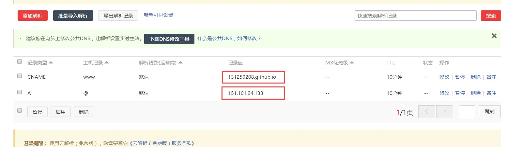
-
第一个红框不解释了，第二个红框是你的博客站点的 ip 地址，ip 获取方式如下，再终端输入命令：
1
ping username.github.io
-
解析配置好了以后，登录 github，进入到博客站点对应的仓库，对域名进行设置：
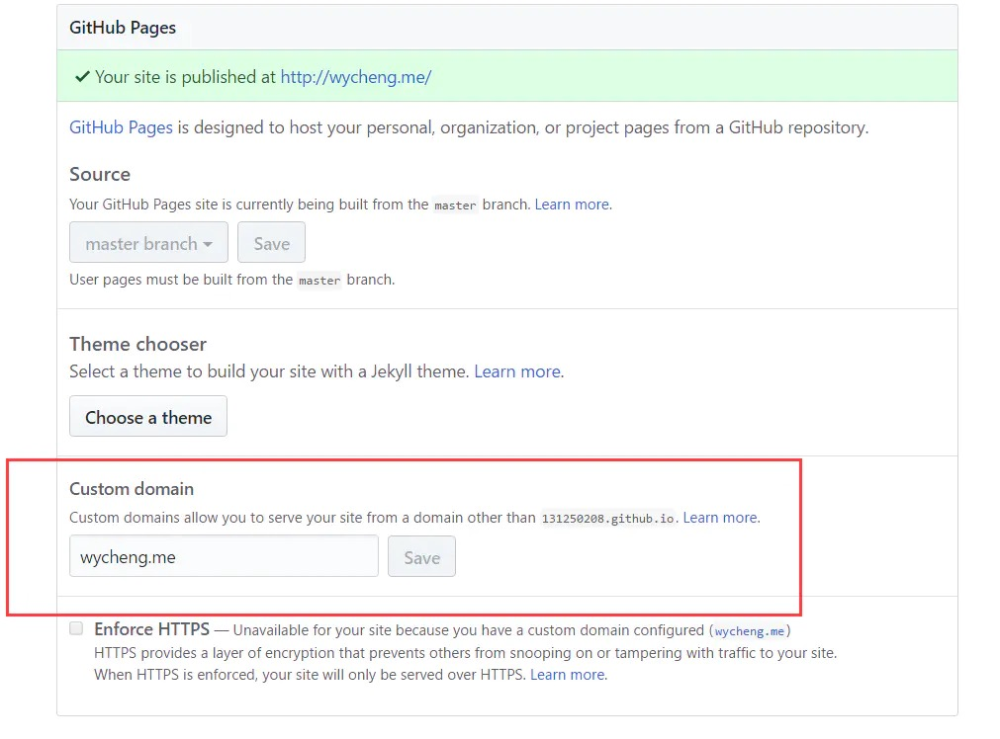
-
另外记住把，
Enforce HTTPS给勾选上。到这儿还没结束，在你的本地博客站点路径下的 source 文件夹里，创建一个名为CNAME的文件（注意要大写），里面写上你之前购买的域名。文件里的域名前加不加 www 都可以。
另外说一句，在你绑定了新域名之后，原来的你的 username.github.io 并没有失效，而是会自动跳转到你的新域名。由于种种原因访问 github 的用户体验并不是很好，可参看 Github 加速优化 来提高静态资源的访问速度。
Gitee Pages 部署
Gitee Pages 类似 Github Pages。Gitee Pages 是面向码云用户开放的静态页面搭建托管服务，用户可以通过默认提供的域名 username.gitee.io 来发布自己的站点。目前，Gitee Pages 已支持 Jekyll、Hugo、Hexo 等静态网站生成引擎，可以很方便的在线编译这几类静态站点项目。当然，原始的 HTML 也是支持的。Gitee Pages Pro 是支持自定义域名版本的 Gitee Pages。目前在码云GVP、码云推荐项目和码云付费企业版中可以免费使用。
开启 Gitee Pages
以 Live My Life 个人博客为例 ，通过「项目主页」->「服务」->「Gitee Pages」打开 Gitee Pages 服务。默认操作下直接点击「启动」并确认，即可开启服务。
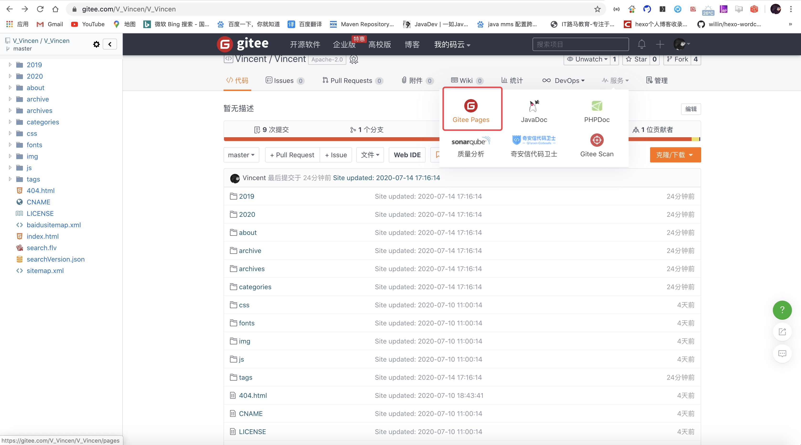
Gitee Pages 配置
对于一个项目来说，项目的 Pages 可能存在于不同的分支上， 或存在于某个分支的二级目录。比如「docs」、「pages」目录等。通过指定部署分支和部署目录，我们就可以很方便的完成 Pages 的自定义部署。
-
部署分支：用于部署Pages的分支 -
部署目录：自定义Pages源文件的目录 -
个性域名：用户自定义域名，需要解析CNAME到gitee.gitee.io生效后使用 -
配置域名证书：用于配置自定义域名HTTPS 证书 -
启动/暂停：启动/暂停Gitee Pages服务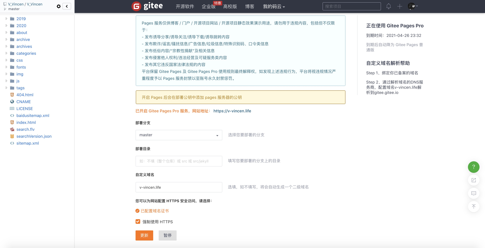
域名解析
域名的购买同上，这里就不再赘述了。域名的解析与上述略有不同。
-
进入域名解析列表并对购买的域名进行解析。
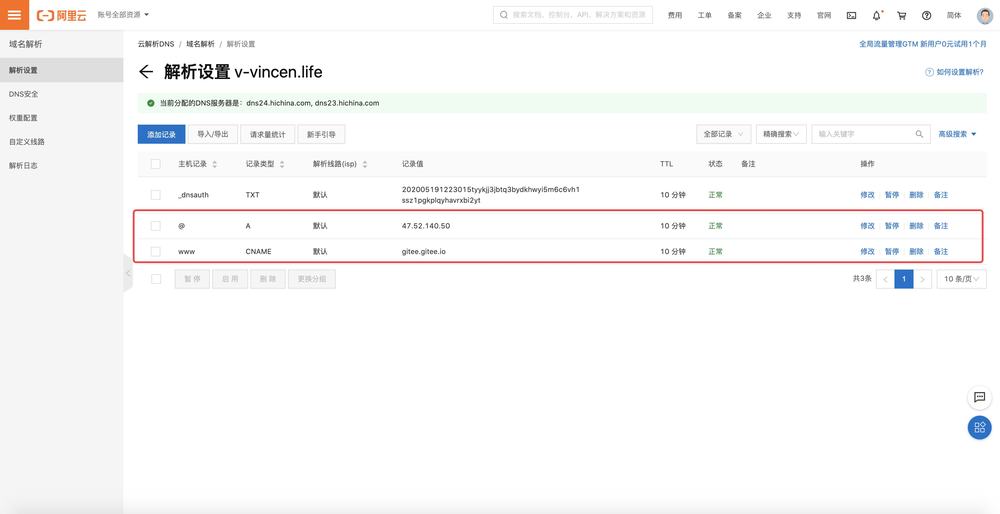
-
选择“添加记录”，按照下图提示填写。注意：记录值里填的分别是
gitee.gitee.io和gitee.gitee.io对应的 IP 地址，而不是你自己yourname.gitee.io和它对应的 IP 地址，切记。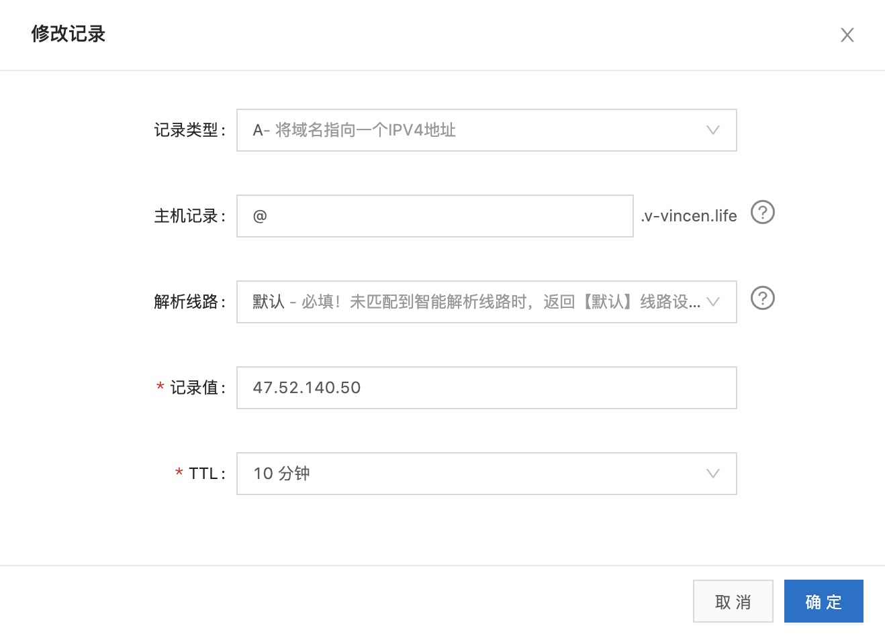
这一步就结束了，托管在 gitee 或 github 上的静态博客不需要备案。回到码云，进入你 hexo 博客的项目的 pages 页面，在左侧选择购买 Gitee Pages Pro 试用版，可以有一个月的试用期。如果你用的是 Gitee Pages 而不是 Pro，貌似是不支持域名绑定。Gitee Pages Pro 不但可以绑定独立域名，还可以直接实现博客自动部署，也就是执行完了 hexo d 命令之后，页面直接部署到码云上了，不需要在到 Pages 页面手工点击更新。（但是 Gitee Pages Pro 每年收费 99 元。）
Gitee Pages Pro 有一个缺点，不支持 HTTP 到 HTTPS 之间的转换。而 Github Pages 自带转换功能，第一节中提到过 Github Pages 设置中，勾选 Enforce HTTPS，勾选上后我们就可以用 HTTPS 访问我的博客地址了 。如果你用的是 Gitee Pages Pro 进行博客部署，同时希望自己的域名是安全访问的话，就需要我们自己去申请 HTTPS 证书。接下来我们就来看看如何申请 HTTPS 证书。
申请 HTTPS 证书
在这里我们使用的是 Freessl 提供的免费 SSL 服务（也是 Gitee Pages 官方推荐，当然 SSL 服务偶尔会有不稳定，毕竟免费的肯定比不上收费的香）。如何使用 FreeSSL 申请免费证书视频：https://blog.freessl.cn/how-to-use-freessl-issue-free-certificates/
-
访问
Freessl，在首页输入自己的域名，此处可以根据使用需求选择证书的类型。以TrustAsia为例，在输入申请域名后，点击创建按钮，进入下一步。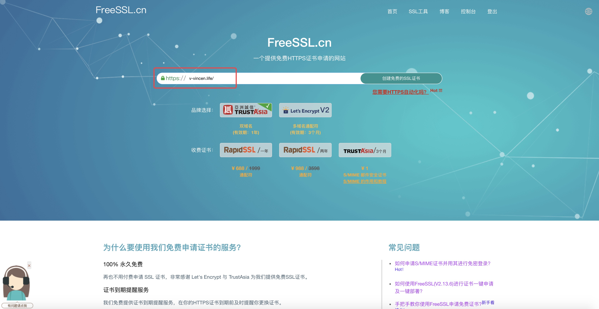
-
输入签发证书的接收邮箱，自行选择证书的类型、验证方式和 CSR 文件生成方式，这里我们选择
浏览器生成后，点击创建。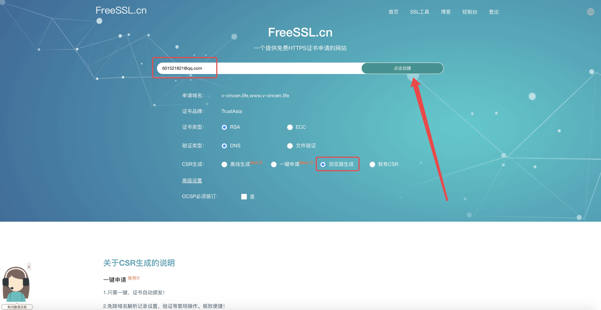
-
使用浏览器创建 CSR 文件，务必保存好生成后下载的私钥文件。点击创建后，需要验证相关域名的 DNS 信息。
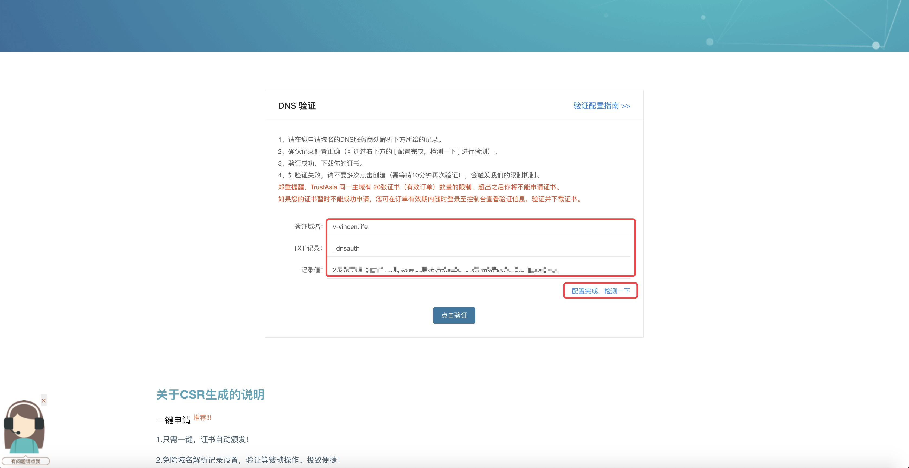
-
这里我们需要 DNS 验证，回到我们的阿里云域名解析列表。把 DNS 验证相关信息按下图填入阿里云解析中。
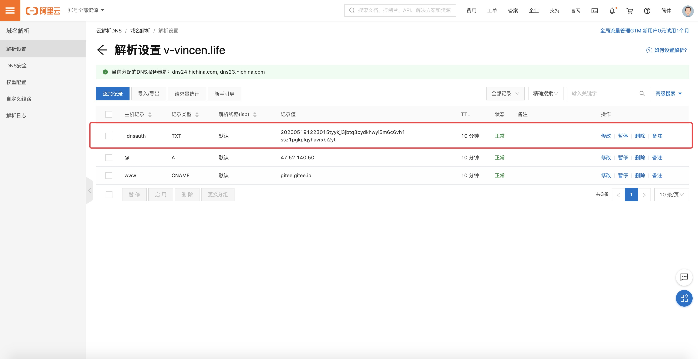
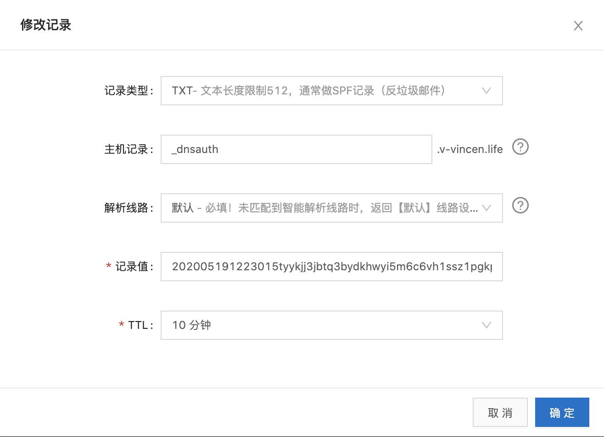
-
解析完成后，点击「配置完成，检测一下」验证一下解析是否正确配置。如果在弹出页面出现了下图的检测内容，就说明解析完成了。
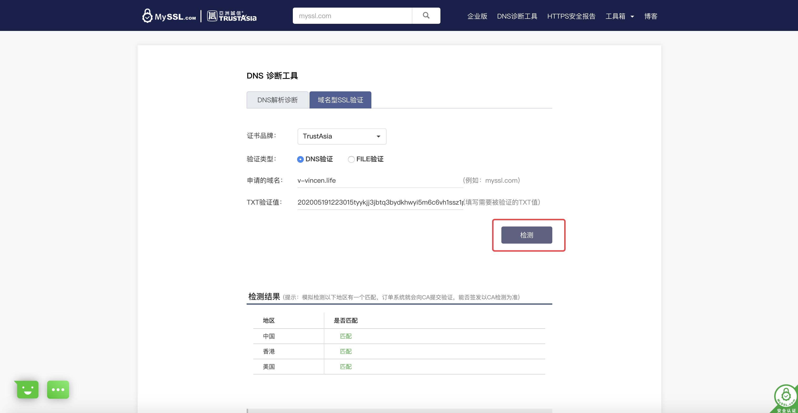
-
此时可以点击「点击验证」完成验证。完成验证后就可以得到一份有效的
HTTPS证书。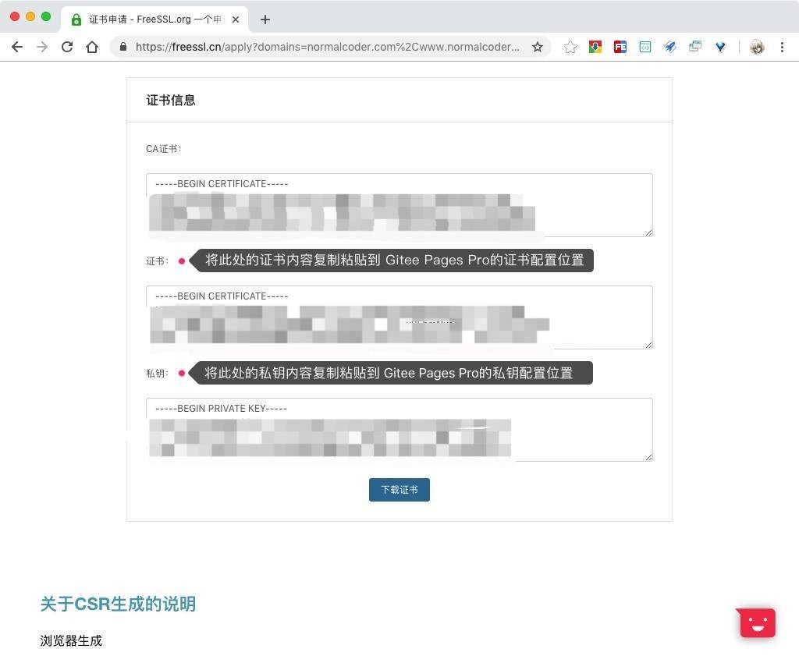
-
将对应的证书、私钥粘贴到
Gitee Pages的证书设置位置，点击「提交」后并重新部署，确认将域名 CNAME 成功解析到gitee.gitee.io后，即可通过自己的域名正常访问网站。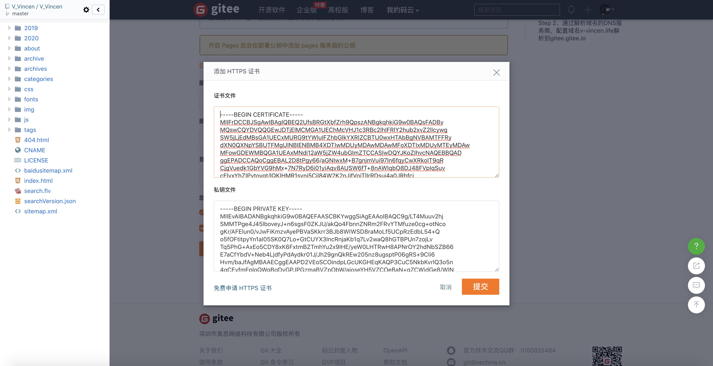
稍等一段时间，就可以用域名访问我们的博客了。有人可能会说 Gitee Pages 配置起来这么麻烦，而且还要收费，为什么不直接用 Github Pages呢？
原因很简单（由于中国国情），Github Pages 在国内访问速度相当慢，我们经常会遇到访问 Github Pages 部署的博客地址，打开页面都需要等好半天的时间，这点对于博主我来说实在无法忍受（如果你能接受，你当然可以直接用 Github Pages 来部署博客），所以博主我花了 99 元，开通了 Gitee Pages Pro。由于博主我比较穷，在购买 Gitee Pages Pro 前，还是挣扎了一番，找了一些优化 Github Pages 访问速度的方法，但是感觉都收效甚微。（感兴趣的童靴，可以查看 Github 加速优化）甚至我都尝试了 GitLab Pages 来进行博客部署，但是最终的效果都差强人意。接下来我将记录，用 GitLab Pages 来部署的方式。
Gitlab Pages 部署
使用 Gitlab Pages + Hexo搭建个人博客，与 Github Pages 和 Gitee Pages 进行搭建，略有不同。用 Github Pages 或 Gitee Pages 搭建 Hexo 都是在本地生成静态网页，然后我们把生成好的静态网页提交到 Github Pages 或 Gitee Pages 上即可。而用 Gitlab Pages 搭建，我们则是把 Hexo 博客源代码提交到 Gitlab 上，然后利用 Gitlab 的 CI/CD 功能发布到 Gitlab Pages 上。
创建 Gitlab Pages 仓库
首先在 Gitlab 上注册一个账号，或者直接用 Github 账号登录也可以。Gitlab 支持 project page 和 user page 两种 page，只需要创建对应的仓库即可。
-
如果你要创建一个 project page，假设 project name：blog，那么你的 project url：https://gitlab.com/username/blog/。启用
GitLab Pages并构建了站点，站点访问 url：https://uesrname.gitlab.io/blog/。 -
如果你要创建一个 user page，假设 project name：john.gitlab.io （john 为你的
Gitlab账号名），则你的 project url：https://gitlab.com/john/john.gitlab.io。启用了GitLab Pages并构建了站点，站点访问 url：https://john.gitlab.io。
Gitlab 账号添加 SSH-Keys
点击你的 Gitlab 账号右上角头像，选择 settings，然后在左侧菜单选择 SSH Keys。然后检查一下你的本地 SSH Keys 的情况。
1 | cd ~/.ssh |
打开 id_rsa.pub 文件，将里面的所有内容添加到上面 Gitlab 账号 settings 中的 SSH Keys中。如果没有 id_rsa.pub 文件的话话，请参看 [Git] 3 Git 命令 生成秘钥。
添加 .gitlab-ci.yml 文件
上面我们也说了 Gitlab Pages 搭建 Hexo，我们需要把 Hexo 博客源代码提交到 Gitlab 上，然后利用 Gitlab 的 CI/CD 来完成自动部署。因此我们需要添加一个 .gitlab-ci.yml 配置文件用来指导服务器如何处理我们提交的源代码。最新的 .gitlab-ci.yml 官方版本：https://gitlab.com/pages/hexo/blob/master/.gitlab-ci.yml 。
1 | image: node:10.15.3 |
推送源码到 Gitlab Pages 仓库
进入你的 Hexo 目录下执行下面命令：
1 | git init |
这样我们就将 Hexo 博客本地源码推送到 Gitlab Pages 仓库上了。
CI/CD 生成 Gitlab pages
上传后，然后 Gitlab 服务器会自动检查 .gitlab-ci.yml 脚本是否有效，校验通过后，会自动开始执行脚本。
点击左侧菜单中的 CI/CD->pipeline 可以查看脚本的执行情况。
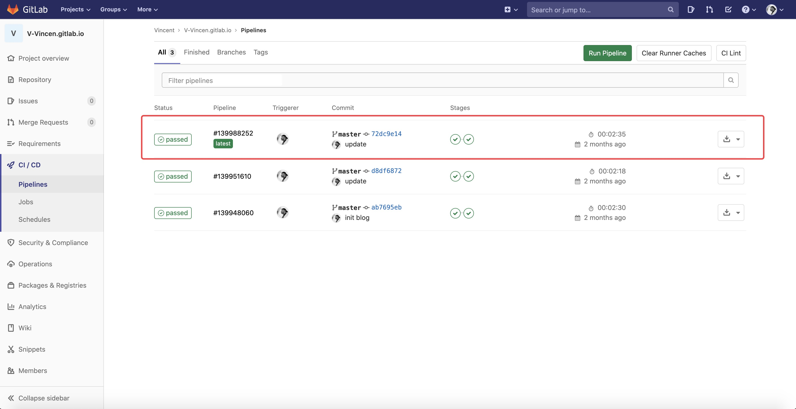
此时已可以访问我们的个人博客站点：https://username.gitlab.io。有时构建完成时马上访问可能会出现404页面，因为 Gitlab 的服务器构建速度比较慢，等5-10分钟再重新访问页面就正常了。
上传至个人服务器，配置 Nginx
如果觉得上面3种方式都不满意的话，可以自己购买服务器，然后将 Hexo 生成好的静态页面上传至服务器。下图就是 hexo g 后生成的静态页面文件。
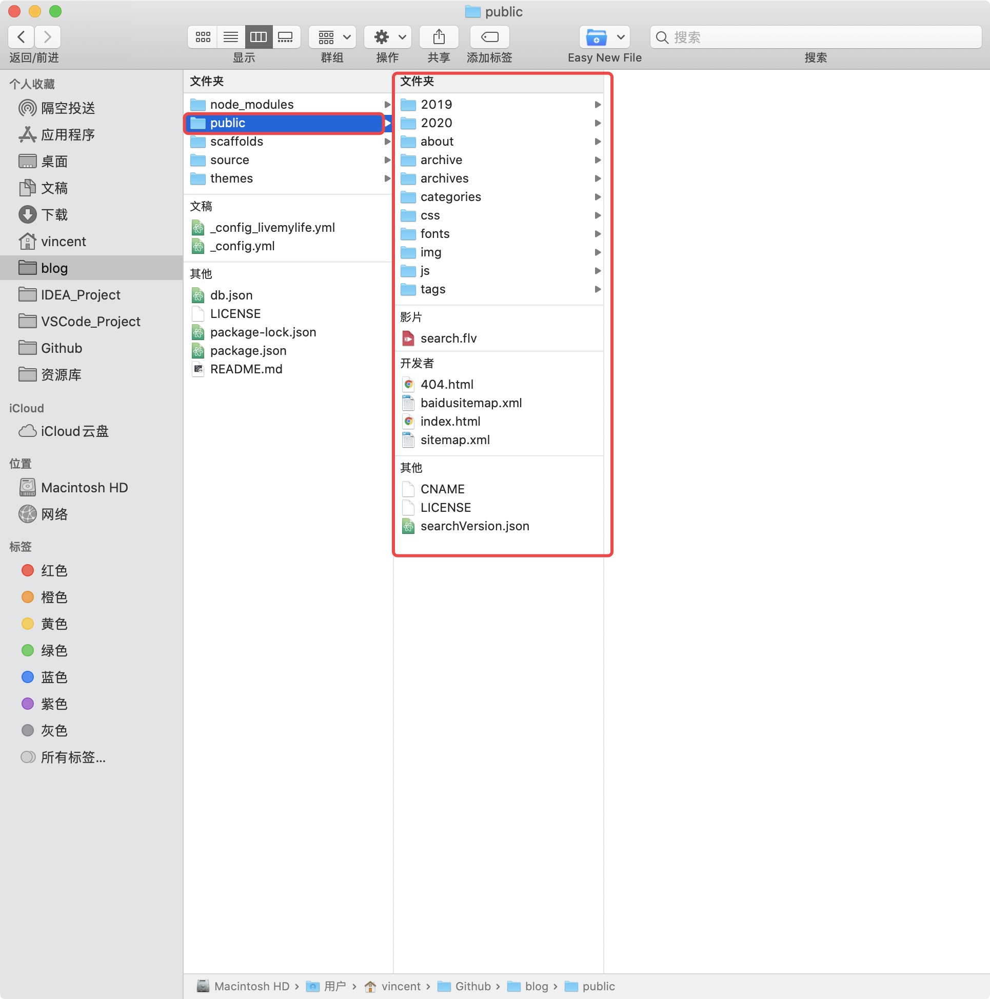
并配置 Nginx 反向代理。具体配置方式后续更新。
总结
Gitee Pages部署：如果你博客的访问者大多是国人的话，同时也无所谓是否需要个性域名的话，那你不妨使用Gitee Pages（根据上文Gitee Pages部署，只需开启Gitee Pages即可）。Gitee Pages Pro部署：如果你博客的访问者大多是国人的话，但是希望有自己的个性域名，那你可以根据上文的Gitee Pages部署，配置自己的个性域名和申请HTTPS证书。Github Pages部署：如果你觉得申请HTTPS证书比较麻烦，同时你又希望有自己的个性域名（当然你可以忍受访问 github 的速度缓慢，这里说的访问慢只是国内访问 github 慢，对于国外来说访问并不会向国内这么缓慢），那么你不妨使用Github Pages部署，同时加上 Github 加速优化 方案（虽说这个加速优化的方案，效果并不显著，但总好过聊胜于无）。- 至个人服务器并配置
Nginx：如果你更喜欢自己自己折腾，并且享受折腾成功后所带来的成就感，那你不妨来个私人订制，自己购买个服务器来搭建自己的博客。
If you like this blog or find it useful for you, you are welcome to comment on it. You are also welcome to share this blog, so that more people can participate in it. If the images used in the blog infringe your copyright, please contact the author to delete them. Thank you !